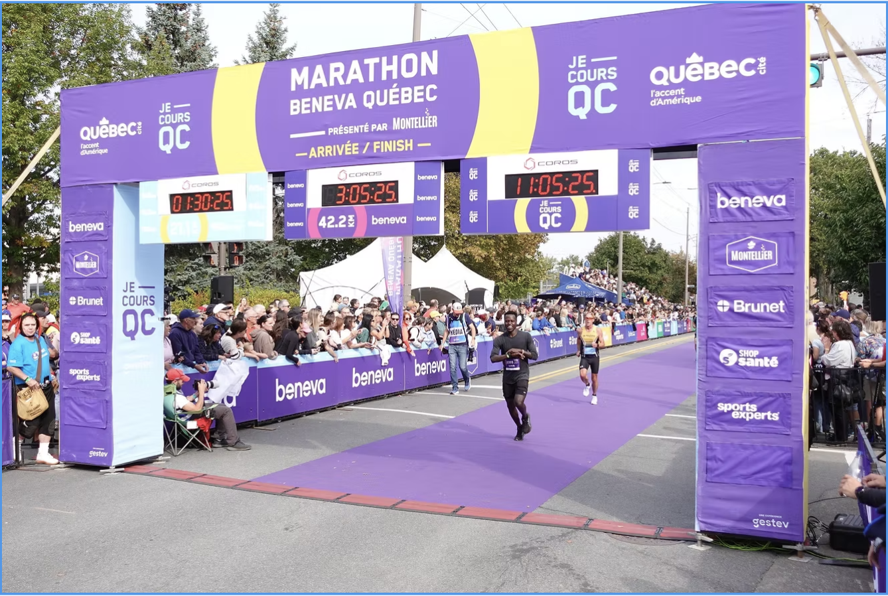

Marathon Learning
2025

Just completed my 2nd marathon this year.
My first marathon was the Paris Marathon, I finished in 3:29.
My second marathon, the recently completed Québec Beneva Marathon, I finished in 3:05.
That's 24 minutes faster than my last marathon within four months!
Learnings from Paris marathon
Before the race:
- Choose the right running socks before choosing the right shoes.
- Training no matter how lonely it gets.
During the race:
- No matter how your legs feel, keep moving.
- Have fun.
Learnings from Beneva Quebec marathon
Before the race:
- Prepare yourself mentally, physically, and emotionally.
- Test your socks before race day.
- Drink plenty of water.
During the race:
- No matter how your legs feel, keep moving.
- Have fun.
Thanks to the Founders Running Club for keeping me consistent every Saturday!
Check us out here and join. We run together all around the world! 🌍